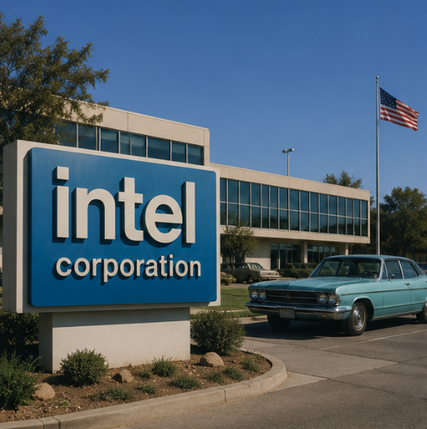
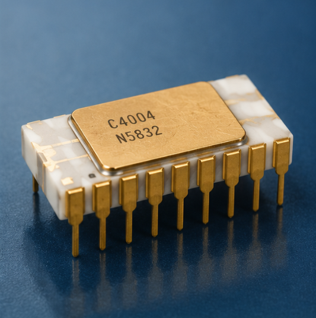
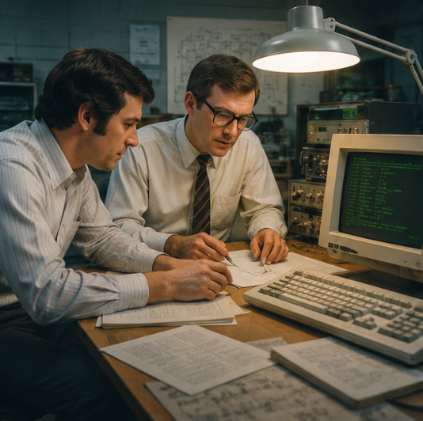
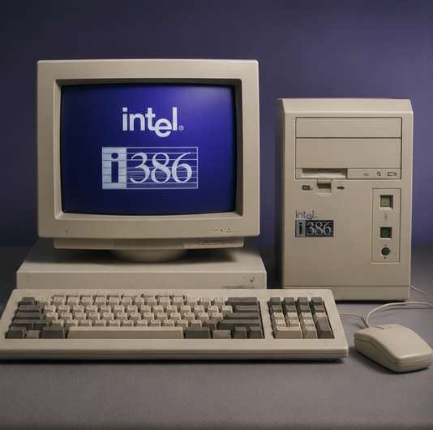
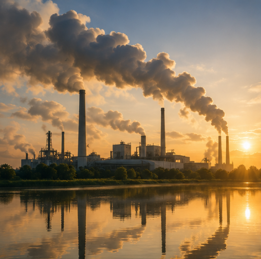
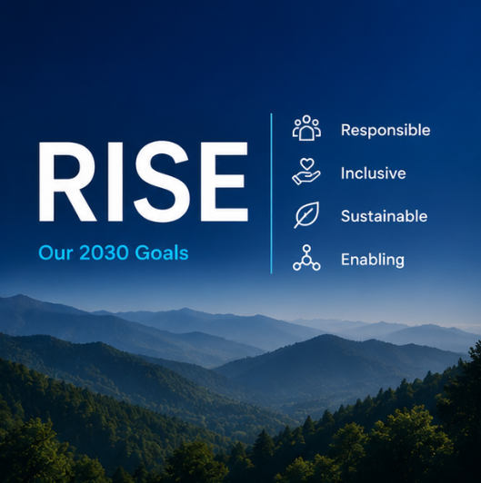
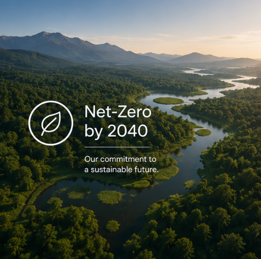
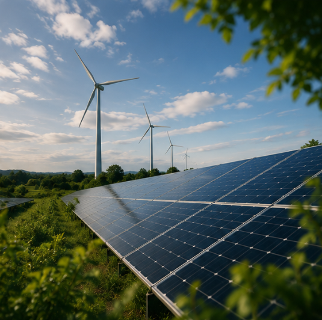
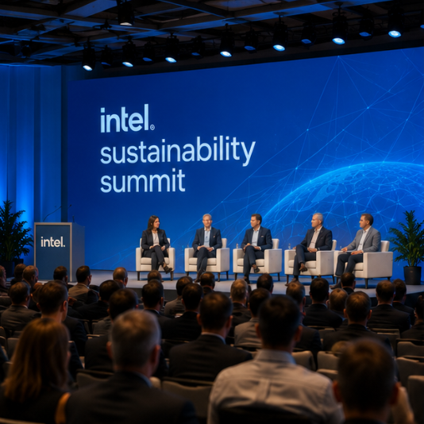

Intel Sustainability
Building a more sustainable future
For more than 50 years, Intel has created technology that improves the life of every person on Earth. We are innovating responsibly to build a better future for all.
Our Sustainability StrategyExplore Timeline
Our Sustainability Journey
Milestones in Intel's evolution from foundational computing breakthroughs to operational sustainability commitments.
Click a card to expand the milestone.
-

1968 Intel Founded Intel is founded, beginning its journey as a leader in technology and innovation. -

1971 First Microprocessor Intel releases the world's first commercial microprocessor, transforming computing forever. -

1978 x86 Architecture The 8086 processor launches, establishing the x86 platform used in modern computers. -

1985 32-Bit Computing Intel introduces the 386 processor, bringing major advances in PC performance. -

2006 Emissions Peak Intel reaches its highest operational greenhouse gas emissions and begins major sustainability investments. -

2020 RISE Initiative Intel launches its RISE strategy, setting ambitious sustainability goals for 2030. -

2022 Net-Zero Commitment Intel announces plans to achieve net-zero operational greenhouse gas emissions by 2040. -

2023 99% Renewable Power Intel reaches 99% renewable electricity usage across its global operations. -

2024 Sustainability Summit Intel hosts its first Sustainability Summit to advance collaboration on sustainable manufacturing.
Our Focus Areas
Sustainability Pillars
RISE Strategy
Intel's RISE framework sets 2030 goals across climate action, water stewardship, waste reduction, and workforce diversity.
Net-Zero Commitment
In 2022, Intel pledged net-zero Scope 1 & 2 emissions by 2040 — a decade ahead of the Paris Agreement's 2050 target.
Water & Waste
Intel has conserved over 50 billion gallons of water since 1998 and is working toward zero manufacturing waste to landfill by 2030.
Explore Further
Sustainability Deep Dive
Launched in 2020, Intel's RISE strategy — Responsible, Inclusive, Sustainable, Enabling — is the company's framework for creating measurable positive impact across environmental, social, and technology dimensions.
2030 Goals
- Achieve net-positive water use across all global operations
- Source 100% renewable electricity company-wide
- Send zero total manufacturing waste to landfill
- Grow women in technical roles to 40% of Intel's workforce
- Enable 30 billion devices to access affordable, power-efficient compute
RISE also holds Intel's supply chain accountable — requiring partners to uphold the same environmental and human-rights standards. Progress is tracked annually in Intel's Corporate Responsibility Report.
Read Intel's RISE ReportIn 2022, Intel committed to net-zero Scope 1 and Scope 2 greenhouse gas emissions by 2040. The strategy prioritises direct reductions over offsets, relying on three core pillars.
The Roadmap
- Energy efficiency — manufacturing process improvements that have avoided over $4 billion in energy costs since 2012
- Renewable electricity — Power Purchase Agreements, Renewable Energy Certificates, and on-site solar
- Chemical abatement — investing in lower-GWP process gases and scrubbing technologies
Progress Milestones
- 2016 — 100% renewable electricity in the United States
- 2020 — 35% absolute GHG reduction vs. 2010 baseline
- 2023 — 99% renewable electricity globally
- 2040 — Net-zero Scope 1 & 2 target
Water Stewardship
Semiconductor fabrication is water-intensive. Intel has invested heavily in conservation since the 1990s, now running one of the most advanced water recycling programmes in the industry.
- Over 50 billion gallons conserved since 1998
- Net-positive water balance achieved at four high-stress sites
- 30+ community watershed-restoration partnerships active globally
- Goal: net-positive water use across all operations by 2030
Waste & Circular Economy
- Over 90% of manufacturing waste recovered through recycling, reuse, or energy recovery
- 100+ categories of single-use plastics eliminated from operations
- Device take-back and materials recovery programmes in all major markets
- Goal: zero total waste to landfill by 2030
In 2023, Intel reached 99% renewable electricity across its global operations — one of the largest corporate renewable footprints in the semiconductor industry.
How Intel Sources Renewables
- Power Purchase Agreements (PPAs) — long-term contracts with wind and solar farms in the US, Europe, and Asia-Pacific
- Renewable Energy Certificates (RECs) — verified renewable attributes purchased from regional grids
- On-site generation — solar installations at campuses in Oregon, Arizona, Israel, and Ireland
Impact
- Equivalent to removing over 1 million cars from the road annually in avoided CO₂ emissions
- The remaining 1% represents regions with limited grid-level renewable access — Intel is partnering with governments and utilities there to accelerate change